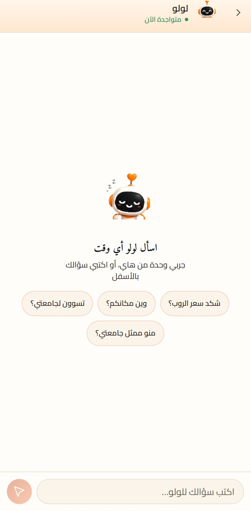
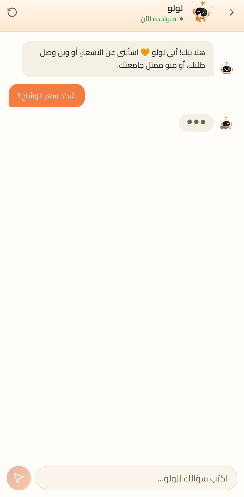
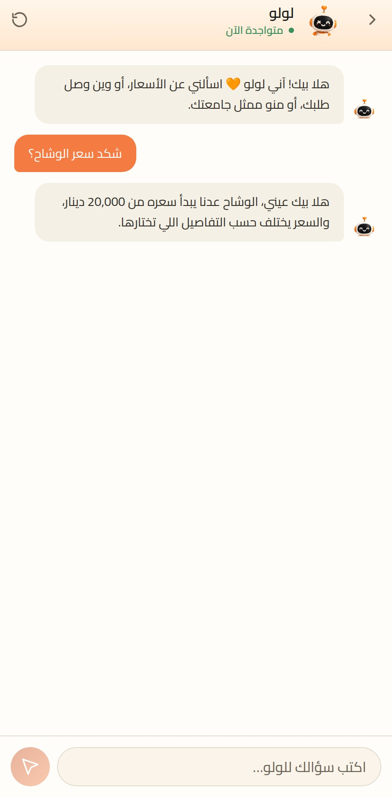
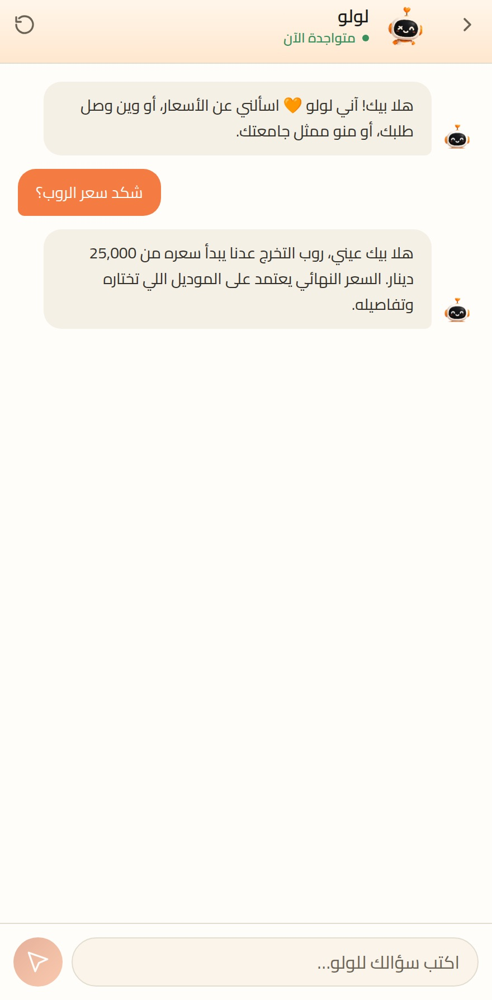

بتطبيق لولو شوب
اسألي لولوأي وقت
تكتب سؤالك بالعامية
شكد سعرالروب؟
جاوبت بثانيتين
تجاوبكعلى طول
وأي شي ثاني تريده
شكد سعرالوشاح؟
الأسعار · القياسات · وين وصل طلبك
تعرف كلشيعن المحل
ما تنطر أحد يرد عليك
متواجدةالآن
٢٬١٠١ طالب وطالبة سجّلوا معنا
ودفعتك كلهاتقدر تطلب سوية







٩:٤١
حمّل تطبيق لولو شوب
ولولو تجاوبك أي وقت
Download onApp Store
Get it onGoogle Play
@lolo_shop96 · lolo-shop96.com